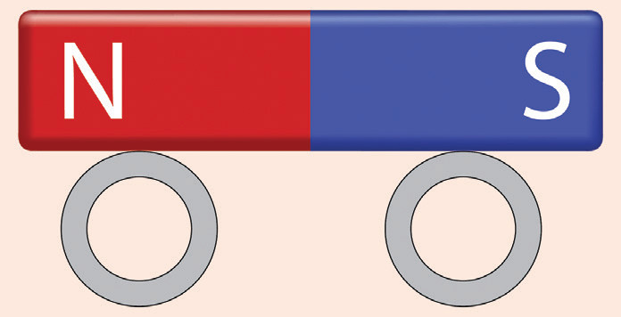
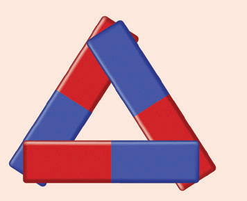
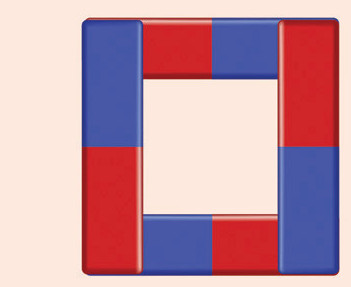

Differentiate between a force due to a magnet from the force due to gravity on the earth.
(a) How do you know that a certain material is magnetic in nature?
(b) State the law of polarity and illustrate it using sketch diagrams.
(c) Suppose you are in the physics laboratory and you are given a bar magnet whose poles are not labelled.
Describe how you could determine which end of the bar is the north pole.
(a) State three applications of magnets.
(b) Draw the following sketch diagrams:
-
(i) Arrangement of domains of dipoles in unmagnetised iron bar.
-
(ii) Arrangement of domains of dipoles in a magnetised iron bar.
(c) Explain what would happen if you cut a bar magnet into half.
(a) Describe the magnetisation process.
(b) How can a permanent magnet be demagnetised?
(c) Explain the type of force that a magnet experiences.
(a) What are magnetic lines of force?
(b) Analyse the properties of lines of force.
(c) Describe the process of magnetic shielding.
Suppose you mount a bar magnet on a set of rubber wheels as shown in Figure 3.56.

Figure 3.56
If you place the ‘magnetic car’ on the magnetic N–S line with the front of the car pointing to the geographic north, would it roll towards the north or towards the south?
Explain your answer.
(a) You are given 4 strong bar magnets; is it possible to build the objects shown in Figure 3.57?


Figure 3.57
(b) Draw diagrams indicating each magnet’s north and south poles.
You are given two iron bars, A and B, that look identical as shown in Figure 3.58.
One of them is a strong permanent magnet.
A
B
Figure 3.58